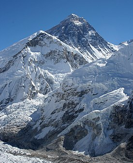
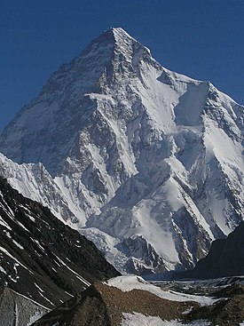
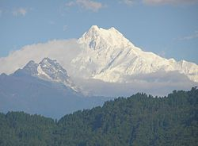
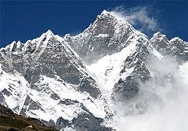
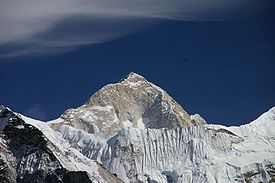
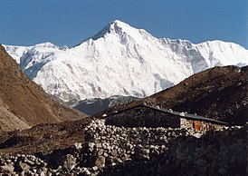
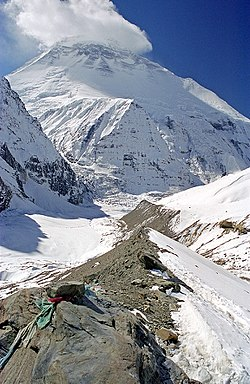
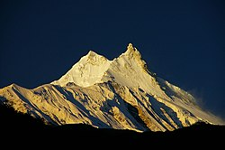
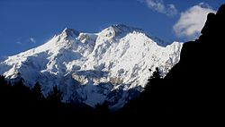

Гора Джомолунгма

«Джомолунгма» у перекладі з тибетської означає «Божественна (qomo) Життя (lung — вітер чи життєва сила) Мати (ma)», названо її на честь бонської богині Шераб Чжаммі. Непальська назва Джомолунгми — «Сагарматха» — означає «Вершина неба».
Гора К2

К2 — друга за висотою гірська вершина після Джомолунгми. Її висота становить 8611 метрів над рівнем моря. Чогорі розташована на кордоні Кашміра (контрольована Пакистаном частина) з Китаєм (Сіньцзян-Уйгурський автономний район) і входить до гірського масиву Каракорум, розташованого на захід від Гімалаїв. Є національною горою Пакистану.
Гора Канченджанґа>

Назва «Канченджанґа» означає «п'ять снігових скарбів», посилаючись на п'ять вершин гори (Головна, Західна, Південна, Центральна та Кангбачен), чотири з яких вищі за 8450 м, що символізують п'ять «скарбів»: золото, срібло, коштовне каміння, зерно і священні книги. Три з п'яти піків розташовані на кордоні непальського округу Таплежунґ та індійського штату Сіккім, ще два — цілком в окрузі Таплежунґ.
Гора Лхоцзе

Лхоцзе (кит. 洛子峰) — четверта за висотою гора у світі. Знаходиться у Гімалаях на південь від Джомолунгми, на кордоні Китаю і Непалу. Включає три вершини — Лхоцзе Головну (8516 м), Лхоцзе Середню (8414 м) і Лхоцзе Шар (8383 м). Між Джомолунгмою та Лхоцзе знаходиться Південне сідло (South Col — 7906 м). Лхоцзе підноситься над Південним сідлом всього на 610 метрів, що робить її найнижчою за відносною висотою серед усіх восьмитисячників
Гора Макалу

Макалу (непальська: मकालु; кит. 马卡鲁山)) — п'ята за висотою вершина світу (8463 м,[1] за іншими даними 8485 м[2]), розташована за 22 км на південний схід від Джомолунгми на кордоні Китаю і Непалу. Форма гори нагадує чотирикутну піраміду з гострими гранями. Назва вершини найімовірніше походить від санскр. Маха-Кала, що перекладається як «Велика Чорна». Також вживається назва Кумба карна, що означає «гігант».
Гора Чо-Ойю

Чо-Ойю (кит. 卓奧有山) — гора у Гімалаях, 20 кілометрів на захід від Джомолунгми, на кордоні Китаю і Непалу; шоста за висотою вершина світу. Входить до складу масиву Евересту. Назва гори тибетською мовою означає «бірюзова богиня» Гора вперше була скорена з північного заходу австрійською експедицією 19 жовтня 1954 у складі Йозефа Йехлера, Херберта Тіхи і шерпа Пасанг Дава Лами. Таким чином Чо-Ойю стала п'ятою підкореною вершиною з висотою понад 8 000 м.
Гора Дхаулагірі

Найменування гори і масиву відображає його зовнішній вигляд. У перекладі з санскриту «дхавала» або «давала» означає білий, а слово «гірі» — гора. Дхаулагірі, доволі масивна гора, яка розташована у південно-східній частині масиву Дхаулагірі-Гімал, в південній частині головного Гімалайського хребта, на захід від річки Калі-Ґандакі, в межиріччі Маянгді і Калі-Ґандакі. Підняття гори над долиною річки Калі-Ґандакі становить понад 7000 метрів при горизонтальній відстані лише близько 30 км. Висота південного і західного схилів вершини перевищує 4000 м від їх основи.
Гора Манаслу

Манаслу (неп. मनास्लु, також відома, як Кутанґ) — гора у Непалі, восьма за висотою вершина світу. Знаходиться у гірському масиві Мансірі-Гімал в Гімалаях, на схід від Аннапурни. Вершина гори суттєво піднімається над прилеглою місцевістю і є добре помітною здалеку.
Гора Нангапарбат

Район Нанга-Парбат — це північно-західний край Західних Гімалаїв, розташований між річками Інд і Астор. У власне хребті масиву розташовані вершини: пік Рупал (7000 м), Нанга-Парбат (8126 м), Ракіот-пік (7062 м) і Чонгра-пік (6820 м). На північний захід із хребта стікають льодовики: Діамір, Ракіот, Булдар; на схід і південний схід — Хонгра, Таршинг, Рупал, Рама.